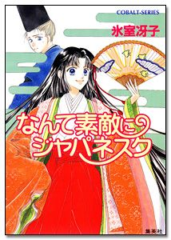
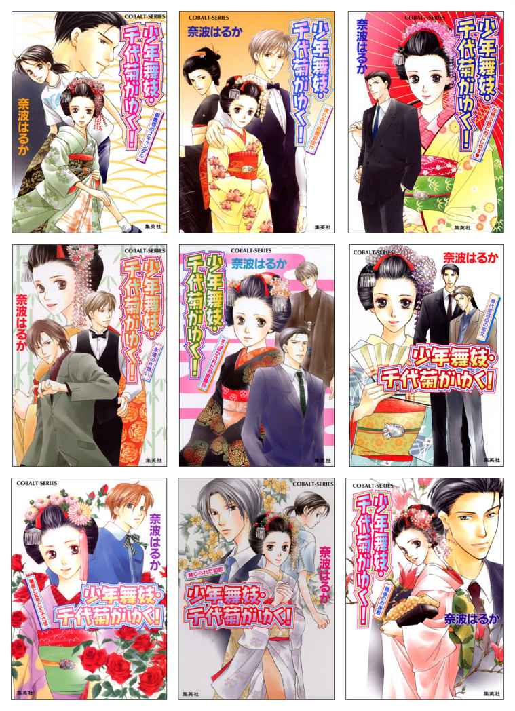

| 集英社電子書籍ガイド２０１４‐２０１５ コバルト文庫編 (集英社コバルト文庫) | |
| 集英社デジタル出版室 | |
| (2015) | |
集英社電子書籍ガイド２０１４－２０１５ コバルト文庫編
集英社デジタル出版室・編
この本は縦書きでレイアウトされています。
また、ご覧になる機種により、表示の差が認められることがあります。
ダウンロードしていただきありがとうございます。
この電子書籍は、２０１５年３月末日現在配信されているコバルト文庫の電子書籍版「ｅコバルト文庫」全点のカタログです。
著者50 音順にプロフィールと配信タイトルを記載し、配信中のタイトルのうち１タイトル（シリーズ）の内容を紹介しています。
また、シリーズ作品のうち人気の10 シリーズをカバー画像とともに紹介しています。
興味を持たれたタイトルはぜひ電子書店にてお求めください。
＊電子版のタイトルは巻数表記を入れたり特典を明記したりする場合があり、底本であるコバルト文庫のタイトルとは一部異なる場合があります。
＊〈〉に入って表示されているのは複数巻にわたっている〈シリーズ〉の名称です。
＊著者プロフィールはコバルト文庫発行時のものを掲載しています。
＊各電子書籍の価格は、電子書店でご確認ください。
集英社電子書籍ガイド２０１４－２０１５ コバルト文庫編 目次
〈ひみつの陰陽師〉ほか
〈ヴィクトリアン・ローズ・テーラー〉ほか
さまよえる本に結末を ウィルブック・ハンターあるいは甘い憂鬱
〈雪之丞事件簿〉ほか
〈小説版 ストロボ・エッジ〉ほか
〈姫頭領、百花繚乱！〉
ロマノフ大公女物語 大帝の恋文【ミニ小説つき】ほか
〈龍と魔法使い〉
〈そして花嫁は恋を知る〉ほか
〈乙女☆コレクション〉ほか
〈英国マザーグース物語〉
〈小説版 高校デビュー〉
〈炎の蜃気楼〉
〈小説版 メイちゃんの執事〉ほか
スカーレット・バード 天空に咲く薔薇【ミニ小説つき】
〈マリア様がみてる〉ほか
〈小説版 君に届け〉ほか
〈リリー骨董店の白雪姫〉ほか
アンとリチャード ほか
〈四龍島シリーズ〉ほか
〈キル・ゾーン〉
〈鬼舞〉
〈皇帝陛下のお気に入り〉ほか
〈異人館画廊〉ほか
薔薇に雨 孤高の王子に捧げる初恋 ほか
〈うさぎ姫の薬箱〉ほか
むしめづる姫異聞 ―王朝スキャンダル― ほか
〈少年舞妓・千代菊がゆく！〉
北条奥右衛門の秘密 虚妄事件簿
〈鳥籠の王女と教育係〉
〈なんて素敵にジャパネスク〉ほか
〈破妖の剣〉
〈花嫁シリーズ〉ほか
〈風の王国〉
〈ユーモア・ミステリー星子ひとり旅シリーズ〉ほか
〈鏡の国シリーズ〉ほか
〈贅沢な身の上〉ほか
藍川竜樹 （あいかわ たつき）
兵庫県出身、１月11 日生まれ。「秘密の陰陽師―身代わりの姫と恋する後宮―」で２０１１年度ロマン大賞受賞。コバルト文庫に受賞作を改題・加筆改稿した「ひみつの陰陽師」シリーズ、「覆面竜女」シリーズがある。
◆イチオシ作品
〈ひみつの陰陽師〉
【電子版限定書き下ろしミニ小説つき】お家存続のため男と偽って陰陽師として出仕することになった真澄は、先輩陰陽師・玲雅の華麗な技に魅せられ、弟子入りを決意する。傲慢で人使いの荒い玲雅にいきなりしごかれる真澄。二人は後宮に現れる物の怪退治に臨んだが、間一髪で取り逃がしてしまう。男女の逢瀬の場にしか現れない物の怪を罠にかけるため、真澄は女装して、玲雅と一夜を過ごすはめに...!? ２０１１年度ロマン大賞受賞作!! シリーズ全８巻配信中！ イラスト：みずのもと
◆電子版配信中タイトル
〈ひみつの陰陽師〉
ひみつの陰陽師１ ひとつ、秘め事だらけの宮廷絵巻【電子版限定・書き下ろしつき】
ひみつの陰陽師２ ふたつ、不運な姫君は百花の陰に鬼を飼う【電子版限定・書き下ろしつき】
ひみつの陰陽師３ みっつ、三日夜の餅をあなたと【電子版限定・書き下ろしつき】
ひみつの陰陽師４ よっつ、黄泉姫は愛を願う【電子版限定・書き下ろしつき】
ひみつの陰陽師５ いつつ、色にでにけり我が恋は【電子版限定・書き下ろしつき】
ひみつの陰陽師６ むっつ、無垢なる瞳は未来をうつす【電子版限定・書き下ろしつき】
ひみつの陰陽師７ ななつ、泣く子も黙る嵐の予兆!? 【電子版限定・書き下ろしつき】
ひみつの陰陽師８ やっつ、やっとのことで大団円【電子版限定・書き下ろしつき】
〈覆面竜女〉
覆面竜女１ 巫女は紡ぐ、聖なる天衣【ミニ小説つき】
覆面竜女２ 巫女は暴く、双なる仮面【ミニ小説つき】
覆面竜女３ 巫女は挑む、三鼎の皇都
覆面竜女４ 巫女はまみえる、四人の皇子
覆面竜女５ 巫女は陥る、五卿の罠
覆面竜女６ 巫女は目指す、六花の頂点
覆面竜女７ 皇帝は欲する、天界の華
聖櫃の癒し手-Restauro-
青木祐子 （あおき ゆうこ）
獅子座、Ａ型。長野県出身。「ぼくのズーマー」で２００２年度ノベル大賞を受賞。著書に「ヴィクトリアン・ローズ・テーラー」シリーズ、「上海恋茶館」シリーズなど。
好きな動物は猫とパンダと恐竜。和食派。趣味は散歩。
◆イチオシ作品
〈ヴィクトリアン・ローズ・テーラー〉
19 世紀のイギリス。ロンドン郊外の町リーフスタウンヒルにある仕立屋『薔薇色』。店主クリスの仕立てるドレスは恋をかなえてくれると大評判。噂を聞いた公爵の令息・シャーロックは立つことのできない妹フローレンスのドレスを頼む。採寸のため屋敷を訪れるクリス。恋のドレスはフローレンスの心を映し出す。そこには思いがけない秘密が隠されていて...。英国調ロマン。シリーズ全29 巻配信中。イラスト：あき
◆電子版配信中タイトル
〈ヴィクトリアン・ローズ・テーラー〉
ヴィクトリアン・ローズ・テーラー１ 恋のドレスとつぼみの淑女
ヴィクトリアン・ローズ・テーラー２ 恋のドレスは開幕のベルを鳴らして
ヴィクトリアン・ローズ・テーラー３ 恋のドレスと薔薇のデビュタント
ヴィクトリアン・ローズ・テーラー４ カントリー・ハウスは恋のドレスで
ヴィクトリアン・ローズ・テーラー５ 恋のドレスは明日への切符
ヴィクトリアン・ローズ・テーラー６ 恋のドレスと硝子のドールハウス
ヴィクトリアン・ローズ・テーラー７ 恋のドレスと運命の輪
ヴィクトリアン・ローズ・テーラー８ あなたに眠る花の香
ヴィクトリアン・ローズ・テーラー９ 恋のドレスと大いなる賭け
ヴィクトリアン・ローズ・テーラー10 恋のドレスと秘密の鏡
ヴィクトリアン・ローズ・テーラー11 恋のドレスと黄昏に見る夢
ヴィクトリアン・ローズ・テーラー12 窓の向こうは夏の色
ヴィクトリアン・ローズ・テーラー13 恋のドレスと約束の手紙
ヴィクトリアン・ローズ・テーラー14 恋のドレスと舞踏会の青
ヴィクトリアン・ローズ・テーラー15 恋のドレスと宵の明け星
ヴィクトリアン・ローズ・テーラー16 聖者は薔薇にささやいて
ヴィクトリアン・ローズ・テーラー17 恋のドレスと追憶の糸
ヴィクトリアン・ローズ・テーラー18 恋のドレスと聖夜の迷宮
ヴィクトリアン・ローズ・テーラー19 恋のドレスと聖夜の求婚
ヴィクトリアン・ローズ・テーラー20 恋のドレスと月の降る城
ヴィクトリアン・ローズ・テーラー21 恋のドレスと湖の恋人
ヴィクトリアン・ローズ・テーラー22 恋のドレスと陽のあたる階段
ヴィクトリアン・ローズ・テーラー23 恋のドレスと翡翠の森
ヴィクトリアン・ローズ・テーラー24 キスよりも遠く、触れるには近すぎて
ヴィクトリアン・ローズ・テーラー25 恋のドレスと花ひらく淑女
ヴィクトリアン・ローズ・テーラー26 聖者は薔薇を抱きしめて
ヴィクトリアン・ローズ・テーラー27 恋のドレスと白のカーテン
ヴィクトリアン・ローズ・テーラー28 宝石箱のひみつの鍵
ヴィクトリアン・ローズ・テーラー29 王子とワルツと懐中時計
〈上海恋茶館〉
上海恋茶館１ 待ちぼうけのダージリン
上海恋茶館２ アール・グレイは琥珀のくちづけ
上海恋茶館３ ジンジャー・ティーは熱くまろやかに
八番街の探偵貴族 はじまりは、舞踏会。
ベリーカルテットの事件簿 薔薇と毒薬とチョコレート
秋杜フユ （あきと ふゆ）
２月28 日生まれ。魚座。Ｏ型。三重県出身、在住。『幻領主の鳥籠』で２０１３年度ノベル大賞受賞。趣味はドライブ。
運転するのもしてもらうのも大好きで、どちらにせよ大声で歌いまくる迷惑な人。カラオケ行きたい。最近コンビニの挽きたてコーヒーにはまり、立ち寄るたびに飲んでいる。
◆イチオシ作品
さまよえる本に結末を ウィルブック・ハンターあるいは甘い憂鬱
結末を求め人を取り込む〝未完の本（ウィルブック）〟とは――!? 自分探し真っ只中、村娘のエステルは、追い詰められていた。その心の隙に、美しい青年の姿を取ったウィルブックの影が――!? 彼が主人公の未完の物語を完結させるべく、エステルは狙われたのだ。その危機を救うのは、美しくも哀しげな瞳をした来訪者ベルナール。またの名をウィルブック・ハンター。悲しみの過去を越え、そして......初めての恋を知る。未完の本が動き出す、旅立ちの物語！ イラスト：あき
◆電子版配信中タイトル
さまよえる本に結末を ウィルブック・ハンターあるいは甘い憂鬱
あさぎり 夕 （あさぎり ゆう）
７月21 日、東京生まれ。蟹座。Ｏ型。１９７６年漫画家デビュー。『なな色マジック』で第11 回講談社漫画賞受賞。ここ数年、従来の正統派少女漫画だけでなく少年漫画や小説にも進出。コバルト文庫に、『雪之丞事件簿』『御園高校シリーズ』『猫かぶりの君』『子猫シリーズ』『誘惑のカサノバ』『紳士シリーズ』『無口シリーズ』『デリバリーホストシリーズ』『レンタルな恋はいかが』『夢屋へおいで』『貴公子と迷子のウサギ』『あの夏のシルエット』などがある。
遺跡と宇宙が好きで、マヤの遺跡に立って星空を眺めるのが夢だが、飛行機嫌いのため未だ果たせず、のんびりと国内の寺院めぐりをしている。
◆イチオシ作品
〈雪之丞事件簿〉
名門私立高校に通う村雨雪之丞。２年生ながら生徒会長を務め、いつも冷静な彼は、〝氷の美貌（クールビューティー）〟と呼ばれている。だが、不良の転校生、真崎の前では、なぜか心の揺れが隠せない。平和な学校で、生徒会の役員が何者かに襲われるという事件が発生。そばには、謎の暗号が書かれた天体写真が落ちていた。真崎が犯人かと疑われる中、第二の事件が！ 人気作家が描くボーイズ・ラブ・ミステリー。シリーズ全５巻配信中。イラスト：あさぎり夕
◆電子版配信中タイトル
甘い恋の賞味期限
美しいひと
恋は危うく香りたつ
先生はいつもやさしい
挑発のルポライター
眠り執事にめざめのキス
まなざしの情熱
生徒会長も恋をする
七年目のラブシック
〈雪之丞事件簿〉
雪之丞事件簿１ ゼウスの恋人
雪之丞事件簿２ シヴァの刻印
雪之丞事件簿３ ガブリエルの遺言
雪之丞事件簿４ ヴィーナスの迷宮
雪之丞事件簿５ アンタレスの記憶
〈玉の輿でいこう！ シリーズ〉
玉の輿でいこう！
薬指に誓って
阿部暁子 （あべ あきこ）
岩手県出身。『陸の魚』で雑誌Cobalt短編小説新人賞に入選の後、『いつまでも』で２００８年度ロマン大賞受賞。コバルト文庫に『屋上ボーイズ』（『いつまでも』改題）、『ストロボ・エッジ』シリーズがある。
好きなものは献血と薄暗い場所。来世はぜひ猫になりたい。
◆イチオシ作品
〈小説版 ストロボ・エッジ〉
【有村架純・福士蒼汰主演で映画化!! 】仁菜子は素直でおっとりした高校生。まだ、恋する気持ちはわからないけれど、今は友達と騒ぐのが楽しい毎日だ。そんなある日の帰り道、電車の中で蓮と出会う。蓮は、学校でアイドルみたいに人気のある男の子だ。寡黙だけど、優しい蓮に、仁菜子はある不思議な気持ちを抱いて...？ 別冊マーガレットの大ヒット・ピュアストーリーが小説化！ 仁菜子の初恋から、もう目が離せない！ カラー口絵つき。シリーズ全４巻配信中。原作・イラスト：咲坂伊緒
◆電子版配信中タイトル
〈小説版 ストロボ・エッジ〉
小説版 ストロボ・エッジ１【イラストつき】
小説版 ストロボ・エッジ２ 消せない思い【イラストつき】
小説版 ストロボ・エッジ３ 告えない思い【イラストつき】
小説版 ストロボ・エッジ４ つながる思い【イラストつき】
〈小説版 アオハライド〉
小説版 アオハライド１
小説版 アオハライド２
小説版 アオハライド３
小説版 アオハライド４
小説版 アオハライド５
彩本和希 （あやもと かずき）
11 月20 日生まれ、蠍座。『アルカトラズの聖夜』で、２００７年度ノベル大賞読者大賞受賞。コバルト文庫には受賞作を文庫化した『アルカトラズの聖夜』のほか、『王の書は星を歌う』シリーズ、『レディ・スカーレット』などがある。
本と漫画と音楽と、おいしいパンと珈琲があれば毎日わりとしあわせ。パンも好きだがごはんも好きなので、たきたてを口にする瞬間は至福のひととき。
◆イチオシ作品
〈姫頭領、百花繚乱！〉
【コバルト特区新作総選挙でシリーズ化！ 特典ミニ小説つき!! 】名門家の姫でありながら、人並み外れた剣の使い手である葵。彼女は、このたび桜花衆の頭領を任じられた。この陽源（ヒノモト）の国は長く国を閉ざしていたが、十七年前、他国に開国を迫られた。その際に「外来種」と呼ばれる毒性の植物が持ち込まれ、いまだに人々の暮らしを脅かしているのだ。この外来種の駆除を専門とする、クセ者揃いの剣豪集団に、紅一点、飛び込むことになった葵の運命やいかに...!! シリーズ全４巻配信中。イラスト：くまの柚子
◆電子版配信中タイトル
〈姫頭領、百花繚乱！〉
姫頭領、百花繚乱！１ 恋の病と鬼副長【ミニ小説つき】
姫頭領、百花繚乱！２ 恋敵はお奉行様【ミニ小説つき】
姫頭領、百花繚乱！３ 忘れ桜と禁じの恋
姫頭領、百花繚乱！４ 光さす花の都に結ぶ恋
一原みう （いちはら みう）
千葉在住。『水恋花』で第１６０回短編小説新人賞受賞の後、『大帝の恋文』で、２０１３年度ロマン大賞受賞。
趣味はスポーツ観戦とネコ探索の旅。特技は物忘れ。しゃりしゃりした食べ物が好き。暑さに弱く、夏は全機能が停止。冬は生き生きします。
◆イチオシ作品
ロマノフ大公女物語 大帝の恋文【ミニ小説つき】
【おまけミニ小説つき!! 】18 世紀、ロシア――。ピョートル大帝一家は宮廷の中心にいた。欧州の貴族には田舎者と馬鹿にされることもあるけれど、ロシア宮廷では誰もが自分たちに道を開け、頭を垂れる。大公女アンナは、ただただ幸せな毎日を謳歌していた。だがある日突然、アンナは美貌の青年貴族と婚約することになる。それが、歴史を揺るがす、大事件へと発展していくとも知らずに...!! ２０１３年度ロマン大賞受賞作!! イラスト：真敷ひさめ
◆電子版配信中タイトル
ロマノフ大公女物語 大帝の恋文【ミニ小説つき】
皇女アナスタシア ～もう一つの物語～
榎木洋子 （えのき ようこ）
10 月３日、山口県生まれ、天秤座、Ａ型。『特別の夏休み』で１９９０年下期コバルト読者大賞を受賞。コバルト文庫にリダーロイス・シリーズの『東方の魔女』『地龍の遺産』『扉を待つ姫』『骸無の剣』『魔城の星竜』『暁の王子』『竪琴の騎士』『東風を呼ぶ姫』『水辺のしらべ』『星竜とタピストリー』、『龍と魔法使い』シリーズ、サキト・シリーズ、『天使の楽譜』『ＳＴＥＰ ＯＵＴ』、『ピジョン・ブラッド』がある。
好きなテーマパークはＴＤＬとナムコワンダーエッグ。好きな季節は秋春冬夏の順。夏の夜は別格で好き。パソコン通信をほぼ日課としているが、コンピュータ自体はよく扱えず情けない。
◆イチオシ作品
〈龍と魔法使い〉
タギはフウキ国〔七賢人〕に属する若きエリート魔法使い。ある日、フウキ国守龍の風龍が行方不明になり、その行方を追ったタギは、念願だった風龍との友情を得た。その後、風魔鳥に襲われた風龍の卵を守りきったタギは、生まれた子供の名付け親になる栄誉を与えられた。そして、その龍の娘〔シェイラギーニ〕とタギとの冒険が始まろうとしていた......。外伝を含むシリーズ全15 冊配信中。イラスト：後藤 星
◆電子版配信中タイトル
〈龍と魔法使い〉
龍と魔法使い２
龍と魔法使い３
龍と魔法使い４
龍と魔法使い５
龍と魔法使い６
龍と魔法使い７
龍と魔法使い８
龍と魔法使い９
龍と魔法使い10
龍と魔法使い 龍の娘編 １
龍と魔法使い 龍の娘編 ２
龍と魔法使い 龍の娘編 ３
龍と魔法使い 外伝 １
龍と魔法使い 外伝 ２
小田菜摘 （おだ なつみ）
埼玉県生まれの佐賀県在住。おひつじ座。ＡＢ型。２００３年度ノベル大賞にて、沖原朋美名義で『桜の下の人魚姫』が読者大賞受賞。
色々な国の文化に触れたくて習いはじめた学生時代以来の英会話だが、記憶力と集中力の、あまりの劣化ぶりに愕然となっている。ユーラシア大陸をひとりで横断するのが、いまのところの夢。
◆イチオシ作品
〈そして花嫁は恋を知る〉
突然の結婚を言い渡された、ブラーナ帝国の皇女エイレーネ。相手は隣国ファスティマの若き王アルファディルだという。十五歳にもなれば覚悟はしていた政略結婚だが、まさか言葉も宗教も違う国だなんて......！ けれど、少なくとも、皇后にいじめられる毎日からは解放されると思ったエイレーネは海を渡る。せつなく胸をしめるけるような恋と、思いがけない運命が待っているとも知らずに――。シリーズ全13 巻配信中。イラスト：椎名咲月
◆電子版配信中タイトル
〈そして花嫁は恋を知る〉
そして花嫁は恋を知る１ 黄金の都の癒し姫
そして花嫁は恋を知る２ 白銀の都へ旅立つ姫
そして花嫁は恋を知る３ 紅の沙漠をわたる姫
そして花嫁は恋を知る４ 緑の森を拓く姫
そして花嫁は恋を知る５ 緑の森を統べる姫
そして花嫁は恋を知る６ 黄土の大地を潤す姫
そして花嫁は恋を知る７ 大河は愛をつなぐ
そして花嫁は恋を知る８ 青の大河をのぼる姫
そして花嫁は恋を知る９ 黄金の都を興す姫
そして花嫁は恋を知る10 黄金の都を受け継ぐ姫
そして花嫁は恋を知る11 月の女神は黎明を導く
そして花嫁は恋を知る12 想いは砂色の聖地に集う
そして花嫁は恋を知る13 薔薇の想いは海を越える
薔薇は花降る都で咲き初める
薔薇は聖なる都で咲き誇る
かたやま和華 （かたやま わか）
１月１日生まれ、東京育ち。Ｏ型。２００５年度富士見ヤングミステリー大賞佳作の「楓の剣！」でデビュー。代表作に「お狐サマ」シリーズ（B's-LOG文庫）がある。
三度の飯より、甘いものと寝ることが好き。寝る子（いい大人）は育つの言葉どおり、横に育ちすぎてしまったため、ウォーキングをはじめようと目論み中。武士に憧れてはじめた居合道は弐段で挫折したへっぽこ侍。 甲羅が20 cm 超えのクサガメのほかに、最近、メインクーンをを家族に迎える。猫の最大種なので、どこまで大きくなるか楽しみ。
◆イチオシ作品
〈乙女☆コレクション〉

ときめき満載、可憐でキケンな怪盗ラブコメ登場!! モダン時代を謳歌する女学生・柊スズメ16 歳。一見、普通の少女だけど、夜の姿は可憐な怪盗レディ・キャンディ！ 歴史の裏で人々を不幸に陥れてきた〈呪われ死宝物〉を回収して封印すべく、執事の蛍と共に夜ごと飛び回っている。幼なじみで許嫁の結人さんに恋しているけれど、彼はレディ・キャンディを追う軍部の特務隊の一員で...。華の帝都を舞台に、ハイカラ少女が恋に使命に大さわぎ！ シリーズ続刊中。２０１５年夏までに全巻配信予定。イラスト：サカノ景子
◆電子版配信中タイトル
〈紫陽花茶房へようこそ〉
紫陽花茶房へようこそ ～ふたりのための英国式魔法茶～
紫陽花茶房へようこそ ～夜のお茶会は英国式で～
〈乙女☆コレクション〉
乙女☆コレクション 怪盗レディ・キャンディと恋するワルツ
乙女☆コレクション 怪盗レディ・キャンディと狙われたキス
久賀理世 （くが りせ）
１９８３年生まれ。東京都出身。『みずいろサナギの伝説』で、雑誌Cobalt短編小説新人賞に入選の後、『始まりの日は空へ落ちる』で２００９年度ノベル大賞受賞。コバルト文庫に『紺碧のアリーナ』シリーズ、『英国マザーグース物語』シリーズがある。
東京音楽大学器楽科、ピアノ演奏家コース卒業。
◆イチオシ作品
〈英国マザーグース物語〉
19 世紀、大英帝国の首都――ロンドン。偉大な探検家である当主が亡くなり、長男が爵位を継ぐことになったアッシュフォード子爵家。長女セシルはといえば、子爵家の未来のため、顔も知らない相手と結婚することが決まっている。だが、好奇心旺盛な彼女は、結婚までの一年間、〝新聞記者〟になるという前代未聞の行動に出た！ 「子爵令嬢」という正体を隠し、少年姿で働くセシルの前に現れたのは......!? 大ヒット、ヴィクトリアン・ミステリー！ シリーズ全６巻配信中。イラスト：あき
◆電子版配信中タイトル
〈英国マザーグース物語〉
英国マザーグース物語１ 婚約は事件の幕開け！
英国マザーグース物語２ 新聞広告には罠がある!?
英国マザーグース物語３ 哀しみのロイヤル・ウェディング
英国マザーグース物語４ 裏切りの貴公子
英国マザーグース物語５ 聖夜に捧ぐ鎮魂歌（レクイエム）
英国マザーグース物語６ 花咲けるきみと永久（とこしえ）の歌【電子特別版】
倉本由布 （くらもと ゆう）
静岡県浜松生まれ。１９８４年に第３回コバルト・ノベル大賞に入選し、高校生作家としてデビュー。コバルト文庫に『きっとめぐり逢える』などの〈きっと〉シリーズ、『常世ノ系譜』シリーズ、『私だけが、ここにいる。』など著書多数。
◆イチオシ作品
〈小説版 高校デビュー〉
少女まんがを読むのが生き甲斐だった。そして、恋ってきっと、すごくいいんだと思った。だから――高校では恋にすべてを賭けよう！ ――と決心はしたものの、部活少女だった長嶋晴菜には超難問。男ウケを一所懸命研究してるのに彼氏ができない。そんな晴菜は、勢いあまってイケメンの先輩・ヨウに「モテ」のコーチをお願いしてしまい!? 別冊マーガレットの大ヒットコミックが待望のノベライズで登場！ カラーイラストつき☆コバルト文庫より出ている同シリーズ６冊を配信中。原作・イラスト：河原和音
◆電子版配信中タイトル
〈小説版 高校デビュー〉
小説版 高校デビュー１
小説版 高校デビュー２ ―好きになっちゃいけないひと！編―
小説版 高校デビュー３ ―クリスマス大作戦！編―
小説版 高校デビュー４ 恋の相談にご用心！編
小説版 高校デビュー５ 恋のトラブル、大量発生!? 編
小説版 高校デビュー６ 恋の告白されちゃいましたっ!? 編【小説オリジナルストーリー】
桑原水菜 （くわばら みずな）
９月23 日千葉県生まれ。天秤座。Ｏ型。中央大学文学部史学科を卒業。１９８９年下期コバルト読者大賞を受賞。コバルト文庫に「炎の蜃気楼」シリーズ、「真皓き残響」シリーズ、「風雲縛魔伝」シリーズ、「赤の神紋」シリーズ、「シュバルツ・ヘルツ－黒い心臓－」シリーズが、単行本に『群青』『針金の翼』などがある。
趣味は時代劇を見ることと、旅に出ること。日本のお寺と仏像が好きで、今一番やりたいことは四国88 カ所踏破。
◆イチオシ作品
〈炎の蜃気楼〉
武田信玄の霊を封印した《魔縁塚》が、何者かによって破壊された夜――高耶（たかや）の親友・譲（ゆずる）は、火だるまになる夢を見た。「ようやく見つけましたぞ、お屋形様...」譲に忍び寄ってくる武者たちの亡霊...。強力な霊によって憑依されようとしている譲を救おうとする高耶は、不思議な《力》を使う直江と出会った。自ら何百年も生きた換生者（かんしょうしゃ）と名のる直江は、高耶に前世からの宿命を告げるのだが...!? 本編全40 巻、番外編、「邂逅編」「幕末編」「昭和編（続刊中）」を配信。イラスト：東城和実（１～12 ）、浜田翔子（13 ～40 ・番外編）、ほたか 乱（邂逅編・幕末編）、高嶋上総（昭和編）
◆電子版配信中タイトル
〈炎の蜃気楼〉
炎の蜃気楼
炎の蜃気楼２ 緋の残影
炎の蜃気楼３ 硝子の子守歌
炎の蜃気楼４ 琥珀の流星群
炎の蜃気楼５ まほろばの龍神
炎の蜃気楼 ―断章― 最愛のあなたへ
炎の蜃気楼６ 覇者の魔鏡（前編）
炎の蜃気楼７ 覇者の魔鏡（中編）
炎の蜃気楼８ 覇者の魔鏡（後編）
炎の蜃気楼９ みなぎわの反逆者
炎の蜃気楼10 わだつみの楊貴妃（前編）
炎の蜃気楼11 わだつみの楊貴妃（中編）
炎の蜃気楼12 わだつみの楊貴妃（後編）
炎の蜃気楼13 黄泉への風穴（前編）
炎の蜃気楼14 黄泉への風穴（後編）
炎の蜃気楼15 火輪の王国（前編）
炎の蜃気楼16 火輪の王国（中編）
炎の蜃気楼17 火輪の王国（後編）
炎の蜃気楼18 火輪の王国（烈風編）
炎の蜃気楼19 火輪の王国（烈濤編）
炎の蜃気楼20 十字架を抱いて眠れ
炎の蜃気楼番外短編集 砂漠殉教
炎の蜃気楼21 裂命の星
炎の蜃気楼22 魁の蠱
炎の蜃気楼23 怨讐の門（青海編）
炎の蜃気楼24 怨讐の門（赤空編）
炎の蜃気楼25 怨讐の門（白雷編）
炎の蜃気楼26 怨讐の門（黒陽編）
炎の蜃気楼27 怨讐の門（黄壤編）
炎の蜃気楼28 怨讐の門（破壤編）
炎の蜃気楼29 無間浄土
炎の蜃気楼30 耀変黙示録Ⅰ ―那智の章―
炎の蜃気楼31 耀変黙示録Ⅱ ―布都の章―
炎の蜃気楼32 耀変黙示録Ⅲ ―八咫の章―
炎の蜃気楼33 耀変黙示録Ⅳ ―神武の章―
炎の蜃気楼34 耀変黙示録Ⅴ ―天魔の章―
炎の蜃気楼35 耀変黙示録Ⅵ ―乱火の章―
炎の蜃気楼36 耀変黙示録Ⅶ ―濁破の章―
炎の蜃気楼37 革命の鐘は鳴る
炎の蜃気楼38 阿修羅の前髪
炎の蜃気楼39 神鳴りの戦場
炎の蜃気楼40 千億の夜をこえて
炎の蜃気楼 番外編 Exaudi nos アウディ・ノス
炎の蜃気楼 番外編 群青
炎の蜃気楼 番外編 真紅の旗をひるがえせ
炎の蜃気楼 番外編 赤い鯨とびいどろ童子
炎の蜃気楼 邂逅編 真皓き残響１ 夜叉誕生（上）
炎の蜃気楼 邂逅編 真皓き残響１ 夜叉誕生（下）
炎の蜃気楼 邂逅編 真皓き残響２ 妖刀乱舞（上）
炎の蜃気楼 邂逅編 真皓き残響２ 妖刀乱舞（下）
炎の蜃気楼 邂逅編 真皓き残響３ 外道丸様（上）
炎の蜃気楼 邂逅編 真皓き残響３ 外道丸様（下）
炎の蜃気楼 邂逅編 真皓き残響４ 十三神将
炎の蜃気楼 邂逅編 真皓き残響５ 琵琶島姫
炎の蜃気楼 邂逅編 真皓き残響６ 氷雪問答
炎の蜃気楼 邂逅編 真皓き残響７ 奇命羅変
炎の蜃気楼 邂逅編 真皓き残響８ 十六夜鏡
炎の蜃気楼 邂逅編 真皓き残響９ 仕返換生
炎の蜃気楼 邂逅編 真皓き残響10 神隠地帯
炎の蜃気楼 邂逅編 真皓き残響11 蘭陵魔王
炎の蜃気楼 邂逅編 真皓き残響12 生死流転
炎の蜃気楼幕末編 獅子喰らう
炎の蜃気楼幕末編 獅子燃える
炎の蜃気楼昭和編１ 夜啼鳥ブルース
炎の蜃気楼昭和編２ 揚羽蝶ブルース
ココロ 直 （こころ なお）
６月19 日生まれ。双子座。Ａ型。東京在住。「夕焼け好きのポエトリー」で２００２年度ノベル大賞読者大賞受賞。コバルト文庫に『命短し恋せよロミオ！』シリーズ、『アリスのお気に入り』シリーズなど。
趣味は......なんだろう？ 誰か趣味ください...。
◆イチオシ作品
〈小説版 メイちゃんの執事〉
四国の田舎で暮らす、平凡な中学２年生の東雲（しののめ）メイ。突然の交通事故で両親を亡くし、天涯孤独になってしまうが、実は父親は大金持ちの長男だったことが分かり、一夜にして超お嬢様に！ イケメンで完璧な専属執事・理人（りひと）と一緒に、全寮制の超セレブ女子校『聖ルチア女学園』に編入することになるメイだが、そこは常識はずれのとんでもない場所で...!? ＴＶドラマ化の人気コミック、小説版！ シリーズ４巻＆小説オリジナルストーリー２冊を配信中。原作・イラスト：宮城理子
◆電子版配信中タイトル
〈小説版 メイちゃんの執事〉
小説版 メイちゃんの執事１【イラストつき】
小説版 メイちゃんの執事２ 薔薇の刻印【イラストつき】
小説版 メイちゃんの執事３ 香港炎上!? 大脱出!! 【イラストつき】
小説版 メイちゃんの執事４ 黄金の海原にきみは輝く【イラストつき】
メイちゃんの執事 アナザー・ティー・タイム【小説オリジナルストーリー】
メイちゃんの執事 プリンセス・イン・ザ・ボックス【小説オリジナルストーリー】
パパのいうことを聞きなさい！ ～うさぎのまぁく～小説版
小説版 オオカミ少女と黒王子
小湊悠貴 （こみなと ゆうき）
神奈川県出身・在住。『スカーレット・バード ～天空に咲く薔薇～』で２０１３年ロマン大賞佳作受賞。受賞作を改題した本作でデビュー。９月24 日生まれの天秤座。Ａ型に見えるＢ型。
執筆のお供は季節にかかわらず熱いほうじ茶とチョコレート。インドア派でのんびりすることを好むため、運動不足が気になる今日この頃。
◆イチオシ作品
スカーレット・バード 天空に咲く薔薇【ミニ小説つき】
【おまけミニ小説つき!! 】飛行士に憧れるアンジェリカは、村で幸せに暮らしていた。だがある日、宮殿から遣いが来る。なんと、アンジェリカは先帝の娘だというのだ。宮殿での生活になじめない彼女は、ある時、現皇帝の企みを知り、逃げ出すことを決意！ アンジェリカを救ったのは、新聞記者を自称する謎の青年、エヴァンスで...!? 自由を求めた少女が、逃亡劇の末に知った真実とは――!? ２０１３年度ロマン大賞受賞作!! イラスト：瀬奈チナリ
◆電子版配信中タイトル
スカーレット・バード 天空に咲く薔薇【ミニ小説つき】
今野緒雪 （こんの おゆき）
１９６５年６月２日、東京生まれ。双子座、Ａ型。『夢の宮～竜のみた夢～』で１９９３年上期コバルト・ノベル大賞、コバルト読者大賞受賞。コバルト文庫にオリエンタル・オムニバスの『夢の宮』シリーズ、ヒロイック・ファンタジーの『スリピッシュ！』シリーズ、学園コメディの『マリア様がみてる』シリーズ、『お釈迦様もみてる』シリーズ、『サカナの天』がある。
◆イチオシ作品
〈マリア様がみてる〉
純粋培養の乙女たちが集う、私立リリアン女学園。清く正しい学園生活を受け継いでいくため、高等部には「姉妹（スール）」と呼ばれるシステムが存在していた。ロザリオを授受する儀式を行って姉妹となることを誓うと、姉である先輩が後輩の妹を指導するのである。高等部に進学して、まだ姉を持っていなかった祐巳は、憧れの『紅薔薇のつぼみ（ロサ・キネンシス・アン・ブゥトン）』である二年生の祥子から、突然「姉妹宣言」をされるが!? シリーズ全37 冊配信中。イラスト：ひびき玲音
◆電子版配信中タイトル
〈マリア様がみてる〉
マリア様がみてる１
マリア様がみてる２ 黄薔薇革命
マリア様がみてる３ いばらの森
マリア様がみてる４ ロサ・カニーナ
マリア様がみてる５ ウァレンティーヌスの贈り物（前編）
マリア様がみてる６ ウァレンティーヌスの贈り物（後編）
マリア様がみてる７ いとしき歳月（前編）
マリア様がみてる８ いとしき歳月（後編）
マリア様がみてる９ チェリーブロッサム
マリア様がみてる10 レイニーブルー
マリア様がみてる11 パラソルをさして
マリア様がみてる12 子羊たちの休暇
マリア様がみてる13 真夏の一ページ
マリア様がみてる14 涼風さつさつ
マリア様がみてる15 レディ、ＧＯ！
マリア様がみてる16 バラエティギフト
マリア様がみてる17 チャオ ソレッラ！
マリア様がみてる18 特別でないただの一日
マリア様がみてる19 イン ライブラリー
マリア様がみてる20 妹（スール）オーディション
マリア様がみてる21 薔薇のミルフィーユ
マリア様がみてる22 未来の白地図
マリア様がみてる23 くもりガラスの向こう側
マリア様がみてる24 仮面のアクトレス
マリア様がみてる25 大きな扉 小さな鍵
マリア様がみてる26 クリスクロス
マリア様がみてる27 あなたを探しに
マリア様がみてる28 フレーム オブ マインド
マリア様がみてる29 薔薇の花かんむり
マリア様がみてる30 キラキラまわる
マリア様がみてる31 マーガレットにリボン
マリア様がみてる32 卒業前小景
マリア様がみてる33 ハロー グッバイ
マリア様がみてる34 リトル ホラーズ
マリア様がみてる35 私の巣（マイネスト）
マリア様がみてる36 ステップ
マリア様がみてる37 フェアウェル ブーケ
〈お釈迦様もみてる〉
お釈迦様もみてる１ 紅か白か【マリア様がみてるカラー口絵つき】
お釈迦様もみてる２ 学院のおもちゃ【マリア様がみてるカラー口絵つき】
お釈迦様もみてる３ ウェットｏｒドライ【マリア様がみてるカラー口絵つき】
お釈迦様もみてる４ 自分応援団【マリア様がみてるカラー口絵つき】
お釈迦様もみてる５ スクール フェスティバルズ【マリア様がみてるカラー口絵つき】
お釈迦様もみてる６ Ｓ－キンシップ【マリア様がみてるカラー口絵つき】
お釈迦様もみてる７ 超難解問題集【マリア様がみてるカラー口絵つき】
お釈迦様もみてる８ 潔き一票【マリア様がみてるカラー口絵つき】
お釈迦様もみてる９ オン ユア マークス【マリア様がみてるカラー口絵つき】
お釈迦様もみてる10 蛍のヒカル
下川香苗 （しもかわ かなえ）
岐阜県出身。１９８４年、Cobalt短編小説新人賞に入賞。コバルトシリーズに『天使なんかじゃない』『ご近所物語』『下弦の月～ラスト・クォーター』『ＮＡＮＡ』『ＮＡＮＡ２』『天然コケッコー』『君に届け』『有閑倶楽部』『俺物語!! 』などがある。
◆イチオシ作品
〈小説版 君に届け〉
「別冊マーガレット」の大ヒット作ノベライズ（カラー口絵収録）!! 黒沼爽子・15 歳。真っ黒なロングヘアーに（青）白い肌...と見た目が超陰気な事もあり、小学生以来〝貞子〟と呼ばれ、恐れられていた。でも、座右の銘は「一日一善」という、本当はとってもピュアな女の子。何とかクラスになじもうと努力するけれど、いつも空回りするばかり...。そんな爽子に対しても、分け隔てなく接してくれる人・風早が現れる!! 爽やかな笑顔と明るい性格で、誰からも好かれている人気者の風早に、爽子は強く憧れるけど...!? シリーズ続刊。最新14 巻まで配信中。原作・イラスト：椎名軽穂
◆電子版配信中タイトル
〈小説版 君に届け〉
小説版 君に届け１【カラーイラスト付】
小説版 君に届け２ ～恋に気づくとき～【カラーイラスト付】
小説版 君に届け３ ～それぞれの片想い～【カラーイラスト付】
小説版 君に届け４ ～好きと言えなくて～【カラーイラスト付】
小説版 君に届け５ ～すれちがう心～【カラーイラスト付】
小説版 君に届け６ ～告白をもういちど～【カラーイラスト付】
小説版 君に届け７ ～あたらしい日々～【カラーイラスト付】
小説版 君に届け８ ～ふたりだけの時間～【カラーイラスト付】
小説版 君に届け９ ～いつもとちがう夏～【カラーイラスト付】
小説版 君に届け10 ～こころをゆらす旅～【カラーイラスト付】
小説版 君に届け11 ～ためらいの理由～【カラーイラスト付】
小説版 君に届け12 ～つないだ手のゆくえ～【カラーイラスト付】
小説版 君に届け13 ～クリスマスをいっしょに～【カラーイラスト付】
小説版 君に届け14 ～自分のまん中にあるもの～【カラーイラスト付】
君に届け 明日になれば【小説オリジナルストーリー】
〈小説版 俺物語!! 〉
小説版 俺物語!! １
小説版 俺物語!! ２
映画ノベライズ 潔く柔く【カラー写真つき】
白川紺子 （しらかわ こうこ）
三重県出身。愛知県在住。２月８日生まれ。水瓶座のＯ型。『サカナ日和』で第１５４回雑誌Cobalt短編小説新人賞に入選の後、『嘘つきな五月女王』で２０１２年度ロマン大賞受賞。コバルト文庫に受賞作を改題、加筆改稿した『嘘つきなレディ～五月祭の求婚～』、『リリー骨董店の白雪姫』シリーズ、『朱華姫の御召人』シリーズがある。
趣味は読書、お菓子作り、能楽鑑賞など。本は古典文学から少女小説、児童文学までなんでも好きです。日々増える本の保管場所に頭を悩ませています。
◆イチオシ作品
〈リリー骨董店の白雪姫〉
【番外ミニ小説つき】読者投票によりシリーズ化が決定！ ホットな新作が早くも電子版で登場!! 19 世紀、英国――。マーチ伯爵家の跡継ぎであるクレアは、ロンドンに骨董店を開く決意をする。令嬢が店を構えるなど前代未聞だが、骨董品の〝声〟が聞こえるクレアは、伯爵家に伝わる『レディ・アン・ジュエルの呪い』を解く鍵を探しているのだ。そんなある日、宝石商のオーナーだという青年が、伝説的なジュエリーの鑑定をしてほしいと訪ねてきて......!? 宝石がみちびく英国ラブストーリー！ シリーズ全３巻配信中。イラスト：宵 マチ
◆電子版配信中タイトル
〈リリー骨董店の白雪姫〉
リリー骨董店の白雪姫１ ラプンツェル・ダイヤモンドの涙【ミニ小説つき】
リリー骨董店の白雪姫２ 海の底のエメラルド・プリンセス【ミニ小説つき】
リリー骨董店の白雪姫３ トワイライト・ルビーの夜明け
〈朱華姫の御召人〉
朱華姫の御召人１ かくて愛しき、ニセモノ巫女
朱華姫の御召人２ かくて恋しき、花咲ける巫女
しらせはる （しらせ はる）
５月11 日生まれ、牡牛座、ＡＢ型。青森県出身。
好きな映画監督はジャン＝ジャック・ベネックスとイングマル・ベルイマン。好きな詩人は立原道造。
◆イチオシ作品
アンとリチャード
騎士・リチャードが戦場でアンを拾って５年。以来、二人は毎晩一緒に眠る仲。といっても、アンはリチャードの寝床を温める「あんか」役!? それ以上でも、それ以下でもなかったはずなんだけど、アンが眠っている間に、リチャードはよからぬ悪戯を...？ ある日、リチャードの気持ちがわからず、邸を飛び出したアンが向かった先は、なんと...「娼館」!? 身分差なんか関係ない！ 抱き合って眠ったら、いつだってあったかい...。淫らな騎士道いたしましょ！ どきどき・もぞもぞ・キュートラブ！ イラスト：水谷悠珠
◆電子版配信中タイトル
アンとリチャード
夢みる嘘つき人形
〈海辺の王シリーズ〉
海辺の王
海辺の恋人たち
真堂 樹 （しんどう たつき）
１月３日生まれ、山羊座。Ｏ型。都内某女子大の文学部卒業。『春王冥府』で第24 回コバルト・ノベル大賞受賞。コバルト文庫に中華風の島・四龍島を舞台にしたカンフー・アクション・ロマン『四龍島』シリーズのほか、『スラムフィッシュ』シリーズ、『春王冥府』『神々の、麗しき額。』『神々の、悪戯な指。』『SO REAL』シリーズ、『青桃院学園風紀録』シリーズ、『レマイユの吸血鬼』シリーズ、『魔術』シリーズがある。
◆イチオシ作品
〈四龍島シリーズ〉
四龍島（スーロンとう）は、その名のとおりに『青龍（チンロン）』『白龍（バイロン）』『朱龍（チューロン）』『黒龍（ヘイロン）』と呼ばれる四人の主が統治する島。白龍市の後継者・マクシミリアンは、妾腹の生まれゆえに『半龍（ハンロン）』と呼ばれ、侮られていた。しかし、歓楽街『花路（ホワルー）』の頭・飛（フェイ）は、彼の瞳に常人とは違うものを感じる。二人が出会うとき、運命は鮮やかに輝きはじめる。疾風怒涛のカンフーアクション！ シリーズ本編全25 冊＆番外編８冊を配信中。イラスト：浅見 侑
◆電子版配信中タイトル
〈四龍島シリーズ〉
龍は微睡む
龍は花を喰らう
龍は誘う
龍は雲にひそむ
龍は炎帝を追う
龍は縛める
龍は酔い痴れる
龍は戯れる
龍は波濤を呼ぶ
龍は嵐に遊ぶ
龍は群青を呑む
龍を春天に放つ
龍は飢える
龍は飛雨に惑う
龍は夜を抱く
龍は乱れる
龍は濡れ濡つ
龍は落陽を咬む
龍は闇に堕（お）つ
花街恋夜
龍は彷徨（さまよ）う
龍は希（こいねが）う
龍は暁を求む
龍は麾（さしまね）く
龍は荒だつ
龍は恋い恋う
龍は薫風に翔（かけ）る
花姫純情
花影彼方
花片戯曲
花龍神話
花鬼幻燈
白き花咲く龍の島
〈青桃院学園風紀録〉
青桃院学園風紀録１ フツウじゃないだろ！【電子版限定・書き下ろしつき】
青桃院学園風紀録２ キケンじゃないだろ！【電子版限定・書き下ろしつき】
青桃院学園風紀録３ スリルがあるだろ！【電子版限定・書き下ろしつき】
青桃院学園風紀録４ オモチャがすきだろ！【電子版限定・書き下ろしつき】
青桃院学園風紀録５ ヒミツがあるだろ！【電子版限定・書き下ろしつき】
青桃院学園風紀録６ キメてもいいだろ！【電子版限定・書き下ろしつき】
青桃院学園風紀録７ ボウケンするだろ！【電子版限定・書き下ろしつき】
青桃院学園風紀録８ フジュンじゃないだろ！【電子版限定・書き下ろしつき】
青桃院学園風紀録９ カゲキになるだろ！【電子版限定・書き下ろしつき】
青桃院学園風紀録10 ホンキでいくだろ！【電子版限定・書き下ろしつき】
青桃院学園風紀録11 トリコにするだろ！【電子版限定・書き下ろしつき】
青桃院学園風紀録12 ミダレりゃいいだろ！【電子版限定・書き下ろしつき】
青桃院学園風紀録13 オトナになるだろ！【電子版限定・書き下ろしつき】
青桃院学園風紀録14 シュヤクになるだろ！【電子版限定・書き下ろしつき】
青桃院学園風紀録15 ケッコンするだろ！【電子版限定・書き下ろしつき】
須賀しのぶ （すが しのぶ）
１９７２年11 月７日生まれ。蠍座。Ｏ型。上智大学文学部史学科卒業。『惑星童話』で１９９４年上期コバルト読者大賞を受賞。コバルト文庫に『キル・ゾーン』シリーズ、『ブルー・ブラッド』シリーズ、『天翔けるバカ』シリーズ、『流血女神伝』シリーズなど多数の作品がある。
特徴は、熱しやすく異常にさめやすく顔がこわい。趣味はほぼ一月おきに変わるが、今のところはフラメンコ。いつかお茶とお花も習いたいそうだが、おそらく口だけだろう。
◆イチオシ作品
〈キル・ゾーン〉
23 世紀の地球は、治安部隊対レジスタンスの大内乱時代をむかえていた。そんな中、治安部隊の小隊長・キャッスルは激戦地ボルネオで、勇敢に戦っている。ある日、敵にとらえられた仲間を救出に行きたいと上官に申し出るキャッスル。しかし、助っ人として新しく入隊してきたのは、とんでもない不良ばかりだった。迫力の戦闘シーンが冴える、近未来バトル。シリーズ全19 巻配信中。イラスト：梶原にき
◆電子版配信中タイトル
〈キル・ゾーン〉
キル・ゾーン１ ジャングル戦線異常あり
キル・ゾーン２ 戦場のネメシス
キル・ゾーン３ 破壊天使
キル・ゾーン４ 密林
キル・ゾーン５ 嘘
キル・ゾーン６ 赤と黒
キル・ゾーン７ 罠
キル・ゾーン８ 罪
キル・ゾーン９ 別れの日
キル・ゾーン10 グッドモーニング・ボルネオ
キル・ゾーン11 異分子
キル・ゾーン12 激突
キル・ゾーン13 宴
キル・ゾーン14 来たれ、壊滅の夜よ
キル・ゾーン15 虜囚
キル・ゾーン16 背信者
キル・ゾーン17 罰
キル・ゾーン18 叛逆
キル・ゾーン19 地上より永遠に
瀬川貴次 （せがわ たかつぐ）
７月25 日生まれ。獅子座、Ｂ型。ノベル大賞の最終候補に残ったのがきっかけで、スーパーファンタジー文庫よりデビュー。現在、コバルト文庫で活躍中。著書に、『闇に歌えば』シリーズ、『暗夜鬼譚』シリーズ、『聖霊狩り』シリーズ、『旋風天戯』シリーズ、『地獄の花嫁がやってきた』シリーズ、『魔王はささやく』シリーズ、『鬼舞』シリーズなどがある。
ゲームセンターで試した占いによると、前世はヒマラヤ高地に生息する穴ウサギ。しかし、ウサギ肉が好物で、ペットコーナーで愛らしい彼らを眺めていると、よだれが止まらない。
◆イチオシ作品
〈鬼舞〉
時は平安。幼い頃から不思議なものが見え、しかも好かれるという厄介な体質の少年・道冬は、陰陽師を目指して京の都にやってきた。ところが用意していた家は荒れ果てていて、その上付喪神や幽霊が出没するという、いわくつきの物件！ 従者の行近も困惑顔だ。さらに陰陽寮では安倍晴明の息子・吉昌に妙に気に入られ、他の陰陽師見習いたちから嫉妬されてしまい――スゴ腕陰陽師への道は険しそう!? シリーズ続刊中。イラスト：星野和夏子
◆電子版配信中タイトル
〈鬼舞〉
鬼舞１ 見習い陰陽師と御所の鬼
鬼舞２ 見習い陰陽師と橋姫の罠
鬼舞３ 見習い陰陽師と百鬼の宴
鬼舞４ 見習い陰陽師と試練の刻
鬼舞５ 見習い陰陽師と爛邪の香り
せひらあやみ （せひら あやみ）
８月28 日生まれ。東京都出身・在住。乙女座のＡ型。「異形の姫と妙薬の王子」で、２０１１年度ノベル大賞佳作を受賞。コバルト文庫に『毒舌姫』シリーズ、『皇帝陛下のお気に入り』シリーズがある。
好きな飲み物はブラックコーヒー。好きな食べ物は鰻と牛肉。好きなアーティストは とPerfume。
◆イチオシ作品
〈皇帝陛下のお気に入り〉
【コバルト特区新作総選挙でシリーズ化！ 特典ミニ小説つき!! 】両親の庇護のもと、屋敷から出ることなくかなり浮世離れした生活を送っていた清佳。が、両親を相次いで亡くし、義兄の口利きで女官として宮廷に出仕することに。周りから浮きながらも懸命に仕事をこなしていた清佳は、ある時玉座に座る皇帝の姿を垣間見てしまう。その〝不健康そうな〟お姿に心を痛める清佳。傍にいた儀仗兵の洸輝に相談すると、なぜか洸輝は清佳を皇帝付き女官に召し上げて...!? シリーズ全５巻配信中。イラスト：みずのもと
◆電子版配信中タイトル
〈皇帝陛下のお気に入り〉
皇帝陛下のお気に入り１ 箱入り姫の取り扱いには気をつけて！【ミニ小説つき】
皇帝陛下のお気に入り２ 動き出しちゃった恋敵!? 【ミニ小説つき】
皇帝陛下のお気に入り３ ついに恋心に気づく時！
皇帝陛下のお気に入り４ それは永遠の別れの言葉！
皇帝陛下のお気に入り５ 恋と運命は結ばれて！
〈あやかし姫陰陽師〉
あやかし姫陰陽師１ 降伏寸前!? 君の鬼門は恋とキス
谷 瑞恵 （たに みずえ）
２月３日生まれ、水瓶座、Ｏ型。三重県出身。『パラダイス ルネッサンス』で１９９７年度ロマン大賞佳作入選。コバルト文庫に『伯爵と妖精』シリーズ、集英社文庫『思い出のとき修理します』他、著書多数。
執筆に欠かせないのは紅茶とチョコレート。マグカップやティーカップなどをつい買ってしまうが、結局いつも同じものを使っている。
◆イチオシ作品
〈異人館画廊〉
死を招く絵画に隠された暗号とは!? 美術ミステリー！ 独自の意味を背景や小物として絵画に書き込む手法、図像（イコン）。英国で図像学（イコノグラフィー）を学んだ千景は、祖父の死を機に日本に戻ってきた。祖母が経営する画廊には一風変わった仲間が集っており人付き合いの苦手な千景は戸惑うばかり。そこで千景はある盗難絵画の鑑定を依頼されるが、仲介者が昔から気の合わない幼馴染みの透磨だと知って...!? 呪いの絵をめぐるミステリー!! シリーズ第２巻は「集英社オレンジ文庫」より刊行。電子版も配信中！ イラスト：詩縞つぐこ
◆電子版配信中タイトル
〈花咲く丘の小さな貴婦人（リトル・レディ）〉
花咲く丘の小さな貴婦人（リトル・レディ）１ 寄宿学校と迷子の羊【電子版カバー書き下ろし】
花咲く丘の小さな貴婦人（リトル・レディ）２ 林檎と花火とカエルの紳士【電子版カバー書き下ろし】
花咲く丘の小さな貴婦人（リトル・レディ）３ それは青いすみれの季節【電子版カバー書き下ろし】
花咲く丘の小さな貴婦人（リトル・レディ）４ 荒野へ、心に花束を抱いて-前編-【電子版カバー書き下ろし】
花咲く丘の小さな貴婦人（リトル・レディ）４ 荒野へ、心に花束を抱いて-後編-【電子版カバー書き下ろし】
〈異人館画廊〉
異人館画廊１ 贋作師とまぼろしの絵
東堂 燦 （とうどう さん）
１月21 日生まれ。新潟県出身、在住。『薔薇に雨』で、２０１３年度ノベル大賞佳作受賞。
寒さに弱い雪国育ち冬生まれ。色は赤と黒、花は薔薇と梅、景色は雪深い月夜が好き。読書と食べることが幸せで、本と紅茶とお菓子を愛しています。物語と庭に咲く老梅のとりこ。
◆イチオシ作品
薔薇に雨 孤高の王子に捧げる初恋
孤独な少女と孤高の王子は、導かれるように出逢い――。精霊を行使し、不思議な現象を起こす彩霊術。誰もが使えるそれを、ファラは使えなかった。精霊王の加護を受けることが出来ず、精霊の姿を見ることができないから......。それでも努力で学院へと進学したファラを待っていたのは、無情な運命だった。彩霊術を使えない者を、卒業させるわけにはいかない。ところが、同じ学院に在籍する王子のサーリヤが、ファラを指導してくれると言って......？ イラスト：四位広猫
◆電子版配信中タイトル
薔薇に雨 孤高の王子に捧げる初恋
長尾彩子 （ながお あやこ）
９月６日生まれ。東京都出身・在住。乙女座のＯ型。「にわか姫の懸想」で、２０１０年度ノベル大賞受賞。コバルト文庫に『姫君の妖事件簿』シリーズ、『乙女風味百鬼夜行』、『うさぎ姫の薬箱』シリーズがある。好きな食べ物はたい焼き（カスタード）。趣味は鉱石収集と古都めぐり。和雑貨とご当地限定グッズ、特にゆるキャラものには目がない。
◆イチオシ作品
〈うさぎ姫の薬箱〉
【コバルト特区新作総選挙でシリーズ化！ 特典ミニ小説つき!! 】奈良の薫りが残る平安初期――。玉櫻咲良（たまざくらのさくら）は、この春に医学を修めたばかり。年中、鼻炎に悩まされており、花粉にやられて目も赤くなるため、「うさぎ姫」とからかわれるような、ややまぬけな医師（くすし）の卵である。生まれつき霊力のある咲良は、この度、呪禁師（じゅごんし）として妖（あやかし）たちの診察や施薬にあたることになる。だが、相棒となる火夏（ひなつ）は美形だが愛想が悪く、そのほかの仲間もクセのある顔ぶればかりで...!? シリーズ全３巻配信中。イラスト：加々見絵里
◆電子版配信中タイトル
〈うさぎ姫の薬箱〉
うさぎ姫の薬箱１ で、出た～！ あやかしだらけのおそろし薬房【ミニ小説つき】
うさぎ姫の薬箱２ おそろしや最凶巫医のお出ましだ【ミニ小説つき】
うさぎ姫の薬箱３ 誓いの神酒は毒か薬か
朧月夜の訪問者
七穂美也子 （ななお みやこ）
11 月５日生まれ。蠍座、Ｏ型。静岡県在住。１９９２年にスーパーファンタジー文庫「凶星～いかなる星の下に」でデビュー。コバルト文庫に〈－「花の探偵」綾杉咲哉－〉シリーズ、〈－春加先生の心理学ファイル－〉シリーズ、〈１／２のヒーロー〉シリーズ、〈絶対霊感〉シリーズなどがある。
趣味は、エステティック旅行に出かけて執筆の疲れを癒すこと。
◆イチオシ作品
むしめづる姫異聞 ―王朝スキャンダル―
帝の寵愛、お断り！ 虫よりをかしきものはなし。「しろがねの宮」と呼ばれる帝が後宮を散歩しているときに出逢ったのは、少年の姿をした姫君。愛らしく賢い彼女がこよなく愛するもの、なんとそれは誰もが忌み嫌う「虫」！ おののきながらも、帝はいつしか彼女に魅了されていく...！ しかし姫はまったくつれない返事ばかりで。すべての謎は「虫」に通ず!? そして帝の片想いはどうなる...!? ときめきの「虫系」平安コミカル・ミステリー！ イラスト：なかしろリリコ
◆電子版配信中タイトル
むしめづる姫異聞 ―王朝スキャンダル―
奈波はるか （ななみ はるか）
静岡県出身。某国立大の授業料免除学生として京都に10 余年暮らす。コバルト文庫に「千代菊」シリーズと「清涼学園」シリーズがある。
趣味：ショパンとシューベルトを弾く。好きなもの：紅茶。魚沼産の米。静岡茶。太陽の光。車。グランドピアノ。和服。
◆イチオシ作品
〈少年舞妓・千代菊がゆく！〉
美希也の家は京都の置屋、吉乃家。女将である母は、女手ひとつで美希也を育ててくれている。置屋の仕事は、舞妓や芸妓をお座敷に差し向けること。ところが吉乃家の舞妓が逃げてしまった！ 代わりをやれるのは美希也しかいない。男が舞妓になるのは前代未聞、でも中学二年のわりに小柄で、舞妓ことばもばっちりの美希也。化粧をしたらめちゃくちゃ可愛くなって、一晩で売れっ子舞妓に――!? シリーズ全53 巻配信中。イラスト：ほり恵利織
◆電子版配信中タイトル
〈少年舞妓・千代菊がゆく！〉
少年舞妓・千代菊がゆく！１ 花見小路におこしやす
少年舞妓・千代菊がゆく！２ 身代金は母の恋文
少年舞妓・千代菊がゆく！３ 最後のお座敷
少年舞妓・千代菊がゆく！４ 濡れ衣で祇園追放!?
少年舞妓・千代菊がゆく！５ すっぽかされたお披露目
少年舞妓・千代菊がゆく！６ 禁じられた初恋
少年舞妓・千代菊がゆく！７ 御曹司のスキャンダル
少年舞妓・千代菊がゆく！８ 永遠の片想い
少年舞妓・千代菊がゆく！９ 薔薇と紅茶と王子さま
少年舞妓・千代菊がゆく！10 花かんざし、危機一髪！
少年舞妓・千代菊がゆく！11 多岐流お家騒動
少年舞妓・千代菊がゆく！12 ミスターＸの秘密クラブ
少年舞妓・千代菊がゆく！13 ときはめぐりて
少年舞妓・千代菊がゆく！14 神様のおりてくる日
少年舞妓・千代菊がゆく！15 売られた姫君
少年舞妓・千代菊がゆく！16 初めてのヴァレンタイン
少年舞妓・千代菊がゆく！17 二都物語
少年舞妓・千代菊がゆく！18 春はあけぼの嫉妬の嵐
少年舞妓・千代菊がゆく！19 拾われた恋文の謎
少年舞妓・千代菊がゆく！20 お座敷にいきたくない！
少年舞妓・千代菊がゆく！21 さきを越された誕生日
少年舞妓・千代菊がゆく！22 恋ごころふたたび
少年舞妓・千代菊がゆく！23 別れのワルツ
少年舞妓・千代菊がゆく！24 ひと夏の冒険
少年舞妓・千代菊がゆく！25 両手に恋敵（ライバル）
少年舞妓・千代菊がゆく！26 その勝負、受けて立ちまひょ
少年舞妓・千代菊がゆく！27 恋する三味線
少年舞妓・千代菊がゆく！28 恋する乙女と髪結師
少年舞妓・千代菊がゆく！29 真夜中の密会
少年舞妓・千代菊がゆく！30 世界一の贈り物
少年舞妓・千代菊がゆく！31 宿命のライバル
少年舞妓・千代菊がゆく！32 プリンセスの招待状
少年舞妓・千代菊がゆく！33 ぼくの父親
幕末少年舞妓・千代菊がゆく！ 烏天狗の盗賊団
少年舞妓・千代菊がゆく！34 突然のプロポーズ
少年舞妓・千代菊がゆく！35 椿谷の恋人たち
少年舞妓・千代菊がゆく！36 もうひとつの阿修羅像
少年舞妓・千代菊がゆく！37 アラブの王子は恋がお好き？
少年舞妓・千代菊がゆく！38 「黒髪」を舞う覚悟
少年舞妓・千代菊がゆく！39 花紅の唇へ...
少年舞妓・千代菊がゆく！40 きみが邪魔なんだ
少年舞妓・千代菊がゆく！41 恋に落ちる瞬間
少年舞妓・千代菊がゆく！42 高瀬川ラブストーリー
少年舞妓・千代菊がゆく！43 ないしょの婚約
少年舞妓・千代菊がゆく！44 声がわりの予兆
少年舞妓・千代菊がゆく！45 許されぬ想い、かなわぬ恋
少年舞妓・千代菊がゆく！46 「秘密」の告白
少年舞妓・千代菊がゆく！47 最初で最後の恋
少年舞妓・千代菊がゆく！48 笑顔のエンディングに向かって
少年舞妓・千代菊がゆく！49 かまいませんよ、男でも
少年舞妓・千代菊がゆく！50 大好きですよ、別れても
少年舞妓・千代菊がゆく！51 一夜かぎりの妻
少年舞妓・千代菊がゆく！52 十六歳の花嫁
少年舞妓・千代菊がゆく！53 ふたりだけの結婚式
野村行央 （のむら ゆきお）
２月22 日生まれ。群馬県出身。２０１１年度ノベル大賞受賞。著書に『ロスト・グレイの静かな夜明け』（集英社刊）がある。
◆イチオシ作品
北条奥右衛門の秘密 虚妄事件簿
虚妄。それは常人には見ることも触ることもできない、この世ならざる幽玄なる存在。祖母を亡くし、天涯孤独の身となってしまった中学生の少女・歩は、祖母の知り合いらしい北条奥右衛門という青年の屋敷に、身を寄せることとなった。だがそれは、虚妄と対峙し自分の力と出自を自覚する運命の始まりだった。歩の祖母である八重と奥右衛門は、虚妄に対抗する組織の人間だったようで......？ イラスト：高山しのぶ
◆電子版配信中タイトル
北条奥右衛門の秘密 虚妄事件簿
響野夏菜 （ひびきの かな）
11 月20 日、埼玉県生まれ。蠍座、Ｏ型。『月虹のラーナ』で１９９１年下期コバルト・ノベル大賞受賞。コバルト文庫に『カウス＝ルー』シリーズ、『アル－ナグクルーン』シリーズ、『Ｓ黄尾』シリーズ、『今夜きみを奪いに参上』シリーズなど多数の作品がある。
蚊を世界から抹殺したいほど憎み、一滴の血も分け与えまいとする一方で、趣味は献血。おいしいものが好きなくせに、普段は「食べるのが面倒だから、光合成が出来る体になりたい」とほざく、矛盾したナマケモノである。
◆イチオシ作品
〈鳥籠の王女と教育係〉
大ヒットシリーズ待望の電子化!! 王女エルレインはは呪われていた。ひとつ、お城から出ると死。ひとつ、彼女に触れた異性はカエルとなる。そのせいで生まれてから16 年間、お城に閉じこもって生きてきた。そんなエルレインに婚約話が！ 相手は魔法大国エリアルダの王子さま。エルレインの姿絵を見て、恋煩いに倒れてしまったという。だけど、王妃教育係兼呪い解決係として派遣されてきた魔法使いは、毒舌＆イヤミな男で...!? シリーズ絶賛配信中。２０１５年５月までに全巻配信予定。イラスト：カスカベアキラ
◆電子版配信中タイトル
〈鳥籠の王女と教育係〉
鳥籠の王女と教育係 婚約者からの贈りもの
鳥籠の王女と教育係 魔王の花嫁
鳥籠の王女と教育係 永遠の恋人
鳥籠の王女と教育係 姫将軍の求婚者
鳥籠の王女と教育係 さよなら魔法使い
鳥籠の王女と教育係 嵐を呼ぶ王子
氷室冴子 （ひむろ さえこ）
本名・碓井小恵子。藤女子大学国文学科卒。『さようならアルルカン』で集英社の青春小説新人賞に佳作入選。コバルト文庫『なんて素敵にジャパネスク』シリーズ、『銀の海 金の大地』などがある。そのほか『いもうと物語』『海がきこえる』など著書多数。２００８年６月逝去。
◆イチオシ作品
〈なんて素敵にジャパネスク〉

時は平安――京の都でも一、二を争う名門貴族の娘である瑠璃姫（るりひめ）は十六歳。初恋の相手・吉野君（よしののきみ）の面影を胸に抱いて独身主義を貫く決心をしていた。だが、世間体（せけんてい）を気にする父親は、結婚適齢期をとっくに過ぎた娘にうるさく結婚を勧めてくる。ついにある夜、父親の陰謀によって権少将（ごんのしょうしょう）と無理やり結婚させられることに!? 絶体絶命の危機を救ってくれたのは、筒井筒（つついづつ）の仲である高彬（たかあきら）だったが...！ シリーズ全８巻＆続編２巻も配信中。
◆電子版配信中タイトル
北里マドンナ
恋する女たち
さようならアルルカン
白い少女たち
多恵子ガール
月の輝く夜に／ざ・ちぇんじ！
なぎさボーイ
蕨ヶ丘物語
〈アグネス白書〉
アグネス白書Ⅰ
アグネス白書Ⅱ
〈クララ白書〉
クララ白書Ⅰ
クララ白書Ⅱ
〈シンデレラシリーズ〉
シンデレラ迷宮
シンデレラ ミステリー
〈なんて素敵にジャパネスク〉
なんて素敵にジャパネスク
なんて素敵にジャパネスク２
なんて素敵にジャパネスク３〈人妻編〉
なんて素敵にジャパネスク４〈不倫編〉
なんて素敵にジャパネスク５〈陰謀編〉
なんて素敵にジャパネスク６〈後宮編〉
なんて素敵にジャパネスク７〈逆襲編〉
なんて素敵にジャパネスク８〈炎上編〉
ジャパネスク・アンコール！
続ジャパネスク・アンコール！
〈冬のディーン 夏のナタリー〉
冬のディーン 夏のナタリー１
冬のディーン 夏のナタリー２
冬のディーン 夏のナタリー３
〈雑居時代〉
雑居時代Ⅰ
雑居時代Ⅱ
前田珠子 （まえだ たまこ）
１９６５年10 月15 日、佐賀県生まれ。天秤座のＢ型。『眠り姫の目覚める朝』で１９８７年第９回コバルト・ノベル大賞佳作入選。コバルト文庫に『破妖の剣』シリーズ、『カル・ランシィの女王』シリーズ、『聖獣』シリーズ、『聖石の使徒』シリーズ、『天を支える者』シリーズ、『空の呪縛』シリーズ、『ジェスの契約』『トラブル・コンビネーション』『陽影の舞姫』『女神さまのお気の向くまま』『万象の杖』『月下廃園』など多数の作品がある。
興味を覚えたことには積極的だが、そうでない場合、横のものを縦にするのも面倒くさがる両極端な性格の持ち主。趣味と実益を兼ねてアロマテラピーに手を出したものの、今ではすっかり実益のほうが大きくなり、趣味とは言いがたくなりつつある。次こそは優雅な趣味を持ちたいと身の程知らずにも思っている。
◆イチオシ作品
〈破妖の剣〉
古王国ガンディアの王女シュラインが、青月の宮から黒衣の魔性・亜珠にさらわれた。ガンディア王は破妖剣士たちが住む浮城の長マンスラムに、王女の救出を依頼する。そして、王女救出に向かったのは破妖の剣「紅蓮姫」を持つ少女剣士ラエスリールだった。強大な魔力を持つ妖貴・亜珠の前にラエスリールの力はあまりに小さい。その時、闇主という美貌の男が少女剣士を救った...。シリーズ40 冊（最新巻まで）配信中。以下続刊。イラスト：小島 榊
◆電子版配信中タイトル
〈破妖の剣〉
破妖の剣１ 漆黒の魔性
破妖の剣２ 白焔の罠
破妖の剣３ 柘榴の影
破妖の剣 外伝１ 女妖の街
破妖の剣４ 紫紺の糸（前編）
破妖の剣４ 紫紺の糸（後編）
破妖の剣 外伝２ ささやきの行方
破妖の剣５ 翡翠の夢１
破妖の剣５ 翡翠の夢２
破妖の剣５ 翡翠の夢３
破妖の剣５ 翡翠の夢４
破妖の剣５ 翡翠の夢５
破妖の剣 外伝３ 忘れえぬ夏
破妖の剣 外伝４ 時の螺旋
破妖の剣 外伝５ 魂が、引きよせる
破妖の剣 外伝６ 呼ぶ声が聞こえる
破妖の剣６ 鬱金の暁闇１
破妖の剣６ 鬱金の暁闇２
破妖の剣６ 鬱金の暁闇３
破妖の剣外伝 言ノ葉は呪縛する
破妖の剣６ 鬱金の暁闇４
破妖の剣６ 鬱金の暁闇５
破妖の剣 外伝 紅琥珀
破妖の剣６ 鬱金の暁闇６
破妖の剣６ 鬱金の暁闇７
破妖の剣６ 鬱金の暁闇８
破妖の剣６ 鬱金の暁闇９
破妖の剣６ 鬱金の暁闇10
破妖の剣６ 鬱金の暁闇11
破妖の剣６ 鬱金の暁闇12
破妖の剣６ 鬱金の暁闇13
破妖の剣６ 鬱金の暁闇14
破妖の剣６ 鬱金の暁闇15
破妖の剣６ 鬱金の暁闇16
破妖の剣６ 鬱金の暁闇17
破妖の剣６ 鬱金の暁闇18
破妖の剣６ 鬱金の暁闇19
破妖の剣６ 鬱金の暁闇20
破妖の剣６ 鬱金の暁闇21
破妖の剣６ 鬱金の暁闇22
真船るのあ （まふね るのあ）
３月26 日生まれ。牡羊座のＡ型。神奈川県出身・在住。白泉社花丸新人賞を受賞し、 年に商業誌デビュー。コバルト文庫に〈花嫁〉シリーズなど著書多数。
趣味は読書とお散歩にウインドウショッピング。お酒も喫煙もたしなめないせいか、かなりの甘い物好き。食後のお菓子とチョコは欠かせません。一度でいいので体重やカロリーを気にせず、ケーキを食べまくるのが夢です。
◆イチオシ作品
〈花嫁シリーズ〉
男の子だけど「花嫁」に!? 女装× ＢＬの大人気読みきりシリーズ!! 父親を早くに亡くし、二年前に母親も失った泉爽人（あきと）。頼る親戚もなく、バイトに励みながら大学に通っていた。そんな爽人が、とある事情で、女装してお見合いすることになる。相手は急成長を遂げた大会社の若き新社長、高藤祐一郎。もう二度と会わないはずが、再び女装してデートをするハメに。さらに男として祐一郎と知り合ってしまった爽人は、彼を騙していることがつらくなってきて...？ 現在刊行されているシリーズ13 冊を配信中。イラスト：緒田涼歌
◆電子版配信中タイトル
〈花嫁シリーズ〉
身代わり花嫁のキス
豪華客船の花嫁
レンタル花嫁
花嫁はヤマトナデシコ
新妻はヤマトナデシコ
花嫁は女子大生？
いつわりの花嫁
光源氏の花嫁
初戀シンデレラ
傲慢社長とじゃじゃ馬花嫁
花咲くシンデレラ
ときめきのマリアージュ
花嫁は愛され家庭教師
〈メイドシリーズ〉
ご主人さまのプロポーズ
身代わりメイドは恋をする
ぼくのメイドレッスン
ダブル× メイドは恋愛中！
ニートなメイド花嫁
〈俺サマなハニー〉
俺サマなハニー 南凰学園クラブハウス日誌
俺サマなハニー 世界は恋するふたりのために
きみと千年廻恋
きらきら
恋してＢＲＯＴＨＥＲ
すれちがいなキス
毛利志生子 （もうり しうこ）
11
月７日生まれ。蠍座、Ｏ型。広島県在住。龍谷大学文学部卒業後、生花の専門学校、トリマー専門学校を卒業。『カナリア・ファイル～金蚕蠱～』で 年度ロマン大賞を受賞。コバルト文庫に『深き水の眠り』シリーズ、『外法師』シリーズ、『風の王国』シリーズ、『遺産』、『クロス～月影の譜～』、『緋色の花嫁』、『夜の虹』がある。
年度ロマン大賞を受賞。コバルト文庫に『深き水の眠り』シリーズ、『外法師』シリーズ、『風の王国』シリーズ、『遺産』、『クロス～月影の譜～』、『緋色の花嫁』、『夜の虹』がある。
猫四匹、犬四匹と同居中だが、彼らの健康状態や嗜好、態度に一喜一憂させられる日々を過ごしている。完全に手玉にとられ、もしや自分の方が飼われているのでは、と不安にかられることもしばしば。
◆イチオシ作品
〈風の王国〉
時は７世紀。唐の皇帝、李世民の姪でありあがら、商人の娘として育てられた翠蘭は突然皇帝に呼び出され、こう言われる「そなた、朕の娘となって吐蕃国に嫁がぬか？」辺境の地、吐蕃（現在のチベット）に政略結婚で嫁ぐことになった翠蘭は、自ら馬に跨がり旅路に出るが、待ち受けていたのは、思いもかけぬ事件と、胸を焦がすような出会いと......。歴史を駆け抜けたヒロインの、運命の物語。シリーズ全27 巻配信中。イラスト：増田メグミ
◆電子版配信中タイトル
〈風の王国〉
風の王国１
風の王国２ 天の玉座
風の王国３ 女王の谷
風の王国４ 竜の棲む淵
風の王国５ 月神の爪
風の王国６ 河辺情話
風の王国７ 朱玉翠華伝
風の王国８ 目容の毒
風の王国９ 臥虎の森
風の王国10 花陰の鳥
風の王国11 波斯の姫君
風の王国12 初冬の宴
風の王国13 金の鈴
風の王国14 嵐の夜（上）
風の王国15 嵐の夜（下）
風の王国16 星の宿る湖
風の王国17 黄金の檻
風の王国18 砂の迷宮
風の王国19 うつつの夢
風の王国20 水面の花
風の王国21 王太子の花嫁
風の王国22 春の使者
風の王国23 山の上の賢者
風の王国24 王杖の守者
風の王国25 抱玉の臣
風の王国26 勝利の時
風の王国27 暁の歌
山浦弘靖 （やまうら ひろやす）
東京生まれ。早稲田大学文学部中退。学生時代に脚本『賊殺』で芸術文化祭文部大臣賞を受賞。以後シナリオライターとして活躍。代表作に『命みつめて』『七人の刑事』『ザ・ガードマン』『銀河鉄道９９９』ほか。コバルト文庫に『殺人切符はハート色』から始まる「星子」シリーズ、「恋姫たち」シリーズ、『銀河の翼』『地のアルカディア』などがある。
趣味は音楽と鉄道。
◆イチオシ作品
〈ユーモア・ミステリー星子ひとり旅シリーズ〉
正義感の強い星子は、女王気どりの上級生に親友がいじめられた事で、女王と子分どもをこらしめてしまった。で、高校二年の秋、ただ今停学中。これを機会に、星子はひとり旅を実行、猫のゴンベエと一緒に長崎へやってきた。だが、着いてすぐに殺人事件にまきこまれてしまった。列車で知り合った宙太というお調子者に助けられて、なんとか警察から解放された星子――第二の殺人事件が...。シリーズ全50 巻配信中。イラスト：服部あゆみ（１～36 ）、浦川佳弥（37 ～47 ）、若松みどり（48 ～50 ）
◆電子版配信中タイトル
〈ユーモア・ミステリー星子ひとり旅シリーズ〉
殺人切符はハート色
死神の時刻表はスペード色
恋の危険信号はダイヤ色
京都迷路地図はクローバー色
殺人占いはジャックの罠
魔女特急はクィーンの罠
夢ハネムーンはキングの罠
ヴァージン・ロードはエースの罠
ハッピーエンドはジョーカーの罠
ワンペアは殺しの花言葉
ツーペアは魔少女の呪い
スリーカードは愛の殺人案内
殺人ゲームはポーカーで
フォーカードは悪魔の招待状
フルハウスは殺しの予言者（上）
フルハウスは殺しの予言者（下）
フラッシュは恋の殺人迷路
ハートストレートは天使のささやき
ダイヤストレートは京都恋殺人
スペードストレートは死美人の恋
クラブストレートは涙の花嫁人形
ハネムーン探偵は７カードで
トランプ刑事の恋はハート色
幻の恋人はスペードの殺人者
恋祭りはダイヤの悪魔
感傷旅行（センチメンタルジャーニー）はクラブの誘惑
運命ゲームはハートのジャック
謎の黄金姫はハートのクイーン
ジョーカーは謎の旅案内人
シンデレラ特急でハート殺人
小町恋伝説でダイヤ殺人
エンゲージリングでスペード殺人
盗まれた結婚式でクローバー殺人
虹の花嫁はハートのエース（上）
虹の花嫁はハートのエース（下）
〈ユーモア・ミステリー星子＆宙太ふたり旅シリーズ〉
Ｉ ＬＯＶＥ ＹＯＵはハート色
ＫＩＳＳ ＭＥ ＫＩＳＳはスペード色
ＳＥＸＹ ＨＯＮＥＹＭＯＯＮはダイヤ色（前）
ＳＥＸＹ ＨＯＮＥＹＭＯＯＮはダイヤ色（後）
Ｍｒ．ＬＡＤＹの恋はクローバー色
愛のメモリーはＪ（ジャック）の奇跡
幻の銀河鉄道はスペードの奇跡
めぐり逢いはＡ（エース）の奇跡
恋のハート探偵はＳＯＳ
ハート特急はジョーカーの微笑み
ハート世紀末伝説はＪ（ジャック）の秘密
ハート甘い悪魔にＱ（クイーン）のＫＩＳＳ
〈ユーモア・ミステリー星子シリーズ〉
恋殺人はハート迷宮
夢少女はスペード迷宮
赤い誘惑はクローバー迷宮
山本 瑤 （やまもと よう）
１９７２年３月26 日生まれ。牡羊座。Ｏ型。明治大学文学部英米文学科卒業。千葉県在住。『パーフェクト・ガーデン』で２００２年度集英社ノベル大賞佳作受賞。コバルト文庫に「花咲かす君」シリーズ、「レッドスキップ」シリーズ、「桃源の薬」シリーズ、「プリンセス・レッスン」シリーズ、「妖精国の恋人」シリーズ、「海の娘が生まれるところ」がある。
典型的なＯ型人間で、その時々の感情のままに、無計画な人生を送ってきた。何事に対しても飽きっぽく執着しないタイプだが、書くことは小学生から、惰眠の習慣は幼児期から続いている。
◆イチオシ作品
〈鏡の国シリーズ〉
鏡の国のシンデレラファンタジー!! 親類の家に居候する少女ティファニー。歳の離れた友人ローズマリーの家で、ティファニーは「魔法の鏡」をのぞきこむ。そこには、見たことのない、鮮やかな王国の風景が映っていた！ ローズマリーは、ティファニーに遺産を遺し、突然亡くなった。受け取りを辞退するティファニー。しかし、もうひとりの遺産の受取人のアデルとともに、「魔法の鏡」の前で、不思議な光に包まれて...!? シリーズ絶賛配信中。２０１５年５月までに全巻配信予定。イラスト：明咲トウル
◆電子版配信中タイトル
〈鏡の国シリーズ〉
鏡の国の女王陛下
鏡の国の王太子殿下
鏡の国の魔法使い
鏡の国の恋人たち
〈妖精国の恋人〉
妖精国の恋人 黒馬の王子様と暁の娘
妖精国の恋人 黒ウサギの王子様とお茶会を
恋せよレディ！ もふもふの城は大騒ぎ 妖精国の恋人
天女は恋する、龍冠の君
我鳥彩子 （わどり さいこ）
10 月24 日生まれ。蠍座。Ｂ型。静岡県出身。『最後のひとりが死に絶えるまで』で２００９年度ロマン大賞佳作受賞。コバルト文庫に『最後のひとりが死に絶えるまで』、『月の瞳のエゼル』シリーズ、『贅沢な身の上』シリーズ、『貴公子ラッドの受難～彼が麗しの花嫁を迎えるまで～』がある。
仔猫とチョコレートとバッハをこよなく愛する道楽人間。へたくそなチェロを弾き、フルーツの種を蒔いては枯らす日々。
◆イチオシ作品
〈贅沢な身の上〉

豪商の娘・花蓮（かれん）は危機に直面していた。両親に縁談を迫られたのだ。男よりも趣味に生きたい花蓮は結婚なんてあり得ない！ そこで花蓮が思いついたのは、新皇帝の後宮に入ることだった。何千人もいる妃に紛れてひっそり暮らせば、自分の時間を全部趣味に使えるはず！ そう思い首尾良く後宮に潜り込むことに成功はしたけれど...!? シリーズ全14 巻配信中。イラスト：犀川夏生
◆電子版配信中タイトル
〈贅沢な身の上〉
贅沢な身の上１ ときめきの花咲く後宮へ！
贅沢な身の上２ ときめきは海を越えて！
贅沢な身の上３ いざ、ときめきの桃園へ！
贅沢な身の上４ ときめきは鳥籠の中に!?
贅沢な身の上５ ときめきは夢と幻の彼方へ!?
贅沢な身の上６ さあ、その手でときめきを描いて！
贅沢な身の上７ だからときめきが止まらない！
贅沢な身の上８ ときめきは蒼き追憶と共に！
贅沢な身の上９ ときめきは空に煌めく星の如く！
贅沢な身の上10 ほら、眸がときめきを伝えるから！
贅沢な身の上11 ときめきは遥かなる河に乱されて！
贅沢な身の上12 ときめきと巡り逢いの環を胸に！
贅沢な身の上13 そう、吐息がときめきを教えるの！
贅沢な身の上14 ときめきの数だけ抱きしめて！
〈あくまで悪魔！〉
あくまで悪魔！ ～おまえには漆黒の花嫁衣装がよく似合う～
あくまで悪魔！ ～おまえにこの腕から逃れる術はない！～
集英社ｅコバルト文庫
人気シリーズ紹介
〈カバー画像ギャラリーつき〉
過去１年間で人気上位だったシリーズ作品をカバー画像とともに紹介しています。
＊スペースの都合上、巻数の多いシリーズのカバー画像は一部の巻のみの展示となっています。
〈マリア様がみてる〉 今野緒雪 イラスト：ひびき玲音
メディアミックスも多数された青春学園小説の金字塔！
純粋培養の乙女たちが集う、私立リリアン女学園。清く正しい学園生活を受け継いでいくため、高等部には先輩が後輩を教え導く「姉妹（スール）」と呼ばれるシステムがある。高等部に進学した祐巳は憧れの先輩・祥子から突然「姉妹宣言」をされて!?
〈炎の蜃気楼〉 桑原水菜 イラスト：東城和実（１～12 ）、浜田翔子（13 ～40 ・番外編）、ほたか 乱（邂逅編・幕末編）、高嶋上総（昭和編）
歴史を超えたＢＬサイキック・アクション！
戦国武将が現代によみがえる歴史ファンタジー！ 武田信玄の霊を封印した《魔縁塚》が、何者かによって破壊された夜――高耶（たかや）の親友・譲（ゆずる）は、火だるまになる夢を見た。「ようやく見つけましたぞ、お屋形様...」譲に忍び寄ってくる武者たちの亡霊...。強力な霊によって憑依されようとしている譲を救おうとする高耶は、不思議な《力》を使う直江と出会った。自ら何百年も生きた換生者と名のる直江は、高耶に前世からの宿命を告げるのだが...!?
〈贅沢な身の上〉 我鳥彩子 イラスト：犀川夏生
むふむふ娘と残念陛下の中華「コメラブ」！
豪商の娘として生まれてた花蓮は、「結婚などせず、うるさい親のいないところで三食昼寝付きの生活をしたいから」という驚きの理由で後宮入り！ それなの に、正体を隠していた皇帝・天綸にうっかり見初められ、溺愛されてしまう......！ というお約束テンコ盛りの中華風ラブコメ！
〈破妖の剣〉 前田珠子 イラスト：小島 榊
選ばれし少女よ、魔力に立ち向かえ！ 大河ファンタジー。
古王国ガンディアの王女シュラインが、青月の宮から黒衣の魔性・亜珠にさらわれた。ガンディア王は破妖剣士たちが住む浮城の長マンスラムに、王女の救出を依頼する。そして、王女救出に向かったのは破妖の剣「紅蓮姫」を持つ少女剣士ラエスリールだった。強大な魔力を持つ妖貴・亜珠の前にラエスリールの力はあまりに小さい。その時、闇主という美貌の男が少女剣士を救った...。
〈少年舞妓・千代菊がゆく！〉 奈波はるか イラスト：ほり恵利織
人気舞妓の正体はキュートな男の子!? ロングヒットシリーズ。
一夜だけのピンチヒッターとして舞妓になり、お座敷に出た男子中学生の美希也。なのにすっかり評判になってしまい、辞められない状況に...！ 変声期がくる まで、舞妓「千代菊」を続けることになって、毎回京都の名所をめぐりながら、様々なお客様と出会います。なかでも、最初の日に出逢った楡崎慎一郎からは、 延々と求愛されることに...！ 毎回読みきりなので、どの巻からでもどうぞ!!

〈ヴィクトリアン・ローズ・テーラー〉 青木祐子 イラスト：あき
心の想いをドレスにうつして――。イギリス社交界ロマン。
着る人の想いを叶える「恋のドレス」の仕立て屋として評判のクリス。ハクニール公爵家の御曹司・シャーロックとの身分違いの恋に悩んでいる。一方シャーロックは、「闇のドレス」で貴族たちを陥れていく一味との対決を迫られる。しかし、「闇のドレス」を仕立てるのは、クリスの母・リンダ。両者の狭間でクリスは懊悩し、二人の恋は試練を迎えていく。
〈なんて素敵にジャパネスク〉 氷室冴子 イラスト：後藤 星
平安ラブ・コメディの決定版！
時は平安――京の都でも一、二を争う名門貴族の娘・瑠璃姫は16 歳。独身主義を貫く決心をしていたけれど、世間体を気にした父親がうるさく結婚を勧めてくる。そしてついにある夜、父親の陰謀で権少将と無理やり結婚させられることに!? 平安少女小説の金字塔!!
〈風の王国〉 毛利志生子 イラスト：増田メグミ
荒野で私は愛に目覚める...激動の運命！
チベットを舞台に歴史を駆け抜けたヒロインの、運命の物語。時は７世紀。唐の皇帝、李世民の姪でありあがら、商人の娘として育てられた翠蘭は突然皇帝に呼び出され、こう言われる「そなた、朕の娘となって吐蕃国に嫁がぬか？」辺境の地、吐蕃（現在のチベット）に政略結婚で嫁ぐことになった翠蘭は、自ら馬に跨がり旅路に出るが、待ち受けていたのは、思いもかけぬ事件と、胸を焦がすような出会いと......。
〈覆面竜女〉 藍川竜樹 イラスト：サカノ景子
もぐり竜娘と苦労人皇子のじれ恋中華コメディ！
天女の末裔で、布に竜気を込めることができる〝竜娘〟。もぐりの竜娘の蓉華は、自分の〝醜い〟容貌を恥じていつも覆面で顔を隠していた。ある時、蓉華は師匠の借金の形に売り飛ばされてしまう。連行された先は、皇帝の皇子・蒼翔が治める陵王府。そこで蓉華は蒼翔に、竜娘の最高位である竜女候補として皇城にあがるよう命令されるが...!?
〈皇帝陛下のお気に入り〉 せひらあやみ イラスト：みずのもと
天然女官の中華ファンタジー!!
【コバルト特区新作総選挙でシリーズ化！ 特典ミニ小説つき!! 】両親の庇護のもと、屋敷から出ることなくかなり浮世離れした生活を送っていた清佳。が、両親を相次いで亡くし、義兄の口利きで女官として宮廷に出仕することに。周りから浮きながらも懸命に仕事をこなしていた清佳は、ある時玉座に座る皇帝の姿を垣間見てしまう。その〝不健康そうな〟お姿に心を痛める清佳。傍にいた儀仗兵の洸輝に相談すると、なぜか洸輝は清佳を皇帝付き女官に召し上げて...!?
集英社電子書籍ガイド２０１４－２０１５ コバルト文庫編
著者 集英社デジタル出版室・編
(C) 集英社デジタル出版室 2015
２０１５年３月31 日発行
発行者 鈴木晴彦
発行所 株式会社 集英社
東京都千代田区一ツ橋２丁目５番10 号
〒１０１－８０５０
［電話］
０３－３２３０－６０８０（読者係）
制作所 株式会社デジタルディレクターズ
本作品の全部また一部を無断で複製、転載、改竄、インターネット上に掲載すること、および有償無償に関わらず、本データを第三者に譲渡することを禁じます。なお個人利用の目的であっても、コピーガードを解除しての複製は、法律で禁じられています。